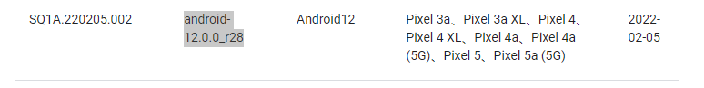
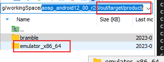
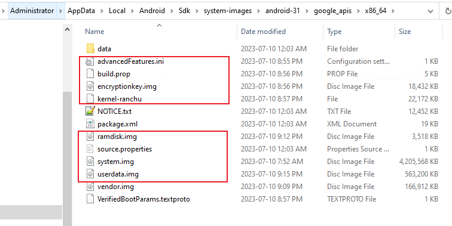
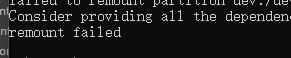

[TOC]
1. AOSP编译
1.1. Ubuntu16.04需要的依赖设置:
apt-get install openjdk-8-jdk
apt-get install git ccache automake lzop bison gperf build-essential zip curl zlib1g-dev g++-multilib python-networkx libxml2-utils bzip2 libbz2-dev libbz2-1.0 libghc-bzlib-dev squashfs-tools pngcrush schedtool dpkg-dev liblz4-tool make optipng maven libc6-dev linux-libc-dev gcc-multilib g++-5-multilib libssl-dev
$ sudo apt-get update $ sudo apt-get install git-core gnupg flex bison gperf build-essential $ sudo apt-get install zip curl zlib1g-dev gcc-multilib g++-multilib libc6-dev-i386 $ sudo apt-get install lib32ncurses5-dev x11proto-core-dev libx11-dev lib32z-dev ccache $ sudo apt-get install libgl1-mesa-dev libxml2-utils xsltproc unzip m4
sudo apt-get install libx11-dev:i386 libreadline6-dev:i386 libgl1-mesa-dev g++-multilib
sudo apt-get install -y git flex bison gperf build-essential libncurses5-dev:i386
sudo apt-get install tofrodos python-markdown libxml2-utils xsltproc zlib1g-dev:i386
sudo apt-get install dpkg-dev libsdl1.2-dev libesd0-dev
sudo apt-get install git-core gnupg flex bison gperf build-essential
sudo apt-get install zip curl zlib1g-dev gcc-multilib g++-multilib
sudo apt-get install libc6-dev-i386
sudo apt-get install lib32ncurses5-dev x11proto-core-dev libx11-dev
sudo apt-get install libgl1-mesa-dev libxml2-utils xsltproc unzip m4
sudo apt-get install lib32z-dev ccach
安装make
aptitude install gcc automake autoconf libtool make
aptitude install gcc gcc-c++
1.2. 下载aosp
优选清华镜像 + 开启代理 （为啥不开代理会失败呢？）
repo init -u https://mirrors.tuna.tsinghua.edu.cn/git/AOSP/platform/manifest -b android-12.0.0_r28
repo sync -c -j32
//中科大
repo init -u git://mirrors.ustc.edu.cn/aosp/platform/manifest -b android-8.0.0_r13
repo init -u git://mirrors.ustc.edu.cn/aosp/platform/manifest -b android-10.0.0_r17
repo init -u git://mirrors.ustc.edu.cn/aosp/platform/manifest -b android-12.0.0_r28
//google原生
repo init -u https://android.googlesource.com/platform/manifest -b android-12.0.0_r28
repo sync -c -j8
repo sync -c --no-tag -j4
repo init -b android-6.0.1_r63
error：如果提示无法连接到 gerrit.googlesource.com？
vim /bin/repo 修改!
REPO_URL='https://mirrors.tuna.tsinghua.edu.cn/git/git-repo'
1.2.1. 如果需要某个特定的 Android 版本:
https://source.android.com/setup/start/build-numbers#source-code-tags-and-builds
目前，安卓10使用版本：
安卓12使用版本：

1.3. AOSP编译刷入Pixel
-------> 完美！！！，按照该教程，可行！
注意一点: 驱动vender（刷真机，涉及到vender，不同机子，不同vender）
本人使用的是pixel一代-------> 代号为sailfish
1.3.1. 编译aosp:
source build/envsetup.sh
lunch ------> 看一下有哪些选项，很多64版本的
aosp_sailfish-userdebug //这里选userdebug版本，拥有root权限
lunch aosp_sailfish-userdebug
make -j8
1.3.2. 刷入镜像 :
切换到目录 /aosp/out/target/product/自己手机的代号
- 设置临时变量
- set ANDROIDPRODUCT_OUT = H:\dockerSharedFiles\aosp_android1000_r17\out\product\sailfish
- #进入bootloader模式
- adb reboot bootloader
- # 自动刷入 -w双清 :
- fastboot flashall -w
- 重启手机
- fastboot reboot
拷贝到本地，
cp /home/chen/workingSpace/aosp/out/ /home/chen/workingSpace/local/ -R
设置变量：ANDROID_PRODUCT_OUT
添加一个

进入window的目录：

注意：adb要用1.0.41的，安卓studio自带即可：
C:\Users\Administrator\AppData\Local\Android\Sdk\platform-tools
1.3.3. 进入开发者模式
点击版本号

1.3.4. 编译模拟器
见后
1.4. 编译jar
1.4.1. 编译framework.jar等jar
编译某一个模块： https://blog.csdn.net/weixin_39914868/article/details/112402060
source build/envsetup.sh
lunch aosp_sailfish-userdebug //这里选userdebug版本，拥有root权限
make framework -j8
归结：
source build/envsetup.sh;lunch aosp_sailfish-userdebug; make framework -j8;python /home/chen/workingSpace/local/aosp_android1000_r17/python_install/replaceFiles/cpSo.py
1.4.2. Android系统目录下 各jar包作用
am.jar：终端下执行am命令时所需的java库。源码目录：framework/base/cmds/am
android.policy.jar：锁屏界面需要用到的jar包，该包引用了android.test.runner.jar，源码目录：framework/base/policy
---------》没找到？？android.test.runner.jar：测试应用所需的jar包，该包引用了core.jar,core-junit.ajr以及framework.jar，源码目录：framework/base/test-runner
bmgr.jar：adb shell命令下对Android Device所有package备份和恢复的操作时所需的java库。官方文档：http://developer.android.com/guide/developing/tools/bmgr.html。不过这个android服务默认是Disabled，而且要backup的应用必须实现BackupAgent，在AndroidManifest.xml的application标签中加入android：backupAgent属性。源码目录：framework/base/cmds/bmgr
bouncycastle.jar： java三方的密匙库，网上资料说用来apk签名、https链接之类，官网 ：http://www.bouncycastle.org/java.html
com.android.future.usb.accessory.jar：用于管理USB的上层java库，在系统编译时hardware层会调用到。源码目录：frameworks/base/libs/usb
com.android.location.provider.jar：
com.android.nfc_extras.jar：NFC外部库。android/nfc/NfcAdapter.java会调用到包中的NfcAdapterExtras.java。源码目录：frameworks/base/nfc-extras
core-junit.jar ：junit核心库，在运行*Test.apk时被调用。
core-tests*.jar：framework下的一系列测试jar包，不做测试时可删除。
core.jar：核心库，启动桌面时首先加载这个。源码目录：
ext.jar：android外部三方扩展包，源码主要是external/nist-sip（java下的sip三方库）、external/apache-http（apache的java三方库）、external/tagsoup（符合SAX标准的HTML解析器）。其实这个jar包可以添加外部扩展jar包，只需在framework/base/Android.mk中的ext-dirs添加src目录即可。
framework-res.apk：android系统资源库。
framework.jar：android的sdk中核心代码。
ime.jar：ime命令所需jar包，用于查看当前话机输入法列表、设置输入法。源码目录：framework/base/cmds/ime
input.jar：input命令所需的jar包，用于模拟按键输入。源码目录：framework/baes/cmds/input
javax.obex.jar：java蓝牙API，用于对象交换协议。源码目录：framework/base/obex
monkey.jar：执行monkey命令所需jar包。源码目录：framework/base/cmds/monkey
pm.jar：执行pm命令所需的jar包，pm详情见adb shell pm，源码目录：framework/base/cmds/pm
services.jar：话机框架层服务端的编译后jar包，配合libandroid_servers.so在话机启动时通过SystemServer以循环闭合管理的方式将各个service添加到ServiceManager中。源码目录：framework/base/service
sqlite-jdbc.jar： sqlite的Java DataBase Connextivity jar包。
svc.jar：svc命令所需jar包，可硬用来管理wifi,power和data。源码目录：framework/base/cmds/svc
如何知道编译文件对应的jar：
1、网上搜索：编译core\java\com\android\internal\policy\DecorView.java
-----> 编译后在out\target\product\msm8909\system\framework目录将会出现android.policy.jar文件，然后执行下面命令替换系统文件
2、yangyunfan教程
1.5. classes.jar编译
framework.jar原始没有打包加密的jar路径：
\out\target\common\obj\JAVA_LIBRARIES\framework_intermediates\classes.jar
基于此，可以做很多事情：
1、依赖跳转
2、依赖编译
3、依赖断点调试
1.6. So的编译
在android开发中，有时候需要编写一些C/C++代码，这时候就要用到JNI技术，我们需要将C/C++程序首先编译成so库，在java中通过native方法调用so库中的函数。 实现以上目的有三种方式： 1、单独编译so库文件，将它push到手机的system/lib目录下， 在java程序中通过loadLibrary加载so库。 2、使用NDK工具进行编译，需要配置NDK环境，然后通过Android Studio将其打包打APK中。 3、在Android源码环境中使用mm，so文件就能够打包到APK文件中，随着APK一起发布，而不是将so文件放到系统目录中。
1.6.1. 如何看cpp编到哪个so
方法一：so与路径的对应
https://blog.csdn.net/koumen3/article/details/50681575
libEGL.so------frameworks/native/opengl/libs/EGL/
libandroid.so——frameworks/base/native/android
libandroid_runtime.so——frameworks/base/core/jni
libandroidfw.so——frameworks/base/libs/androidfw
libaudioutils.so——system/media/audio_utils
libbinder.so——frameworks/native/libs/binder
libbluedroid.so——system/bluetooth/bluedroid
libc.so——bionic/libc
libcamera_client.so——frameworks/av/camera
libcorkscrew.so——system/core/libcorkscrew
libcpustats.so——frameworks/native/libs/cpustats
libcrypto.so——external/openssl
libcutils.so——system/core/libcutils
libdbus.so——external/dbus/dbus
libdvm.so——dalvik/vm
libemoji.so——frameworks/opt/emoji
libETC1.so——frameworks/native/opengl/libs
libgccdemangle——external/gcc-demangle
libgui.so——frameworks/native/libs/gui
libgabi++.so——abi/cpp
libGLESv1_CM.so——frameworks/native/opengl/libs
libharfbuzz.so——external/harfbuzz
libhwui.so——frameworks/base/libs/hwui
libhardware_legacy.so——hardware/libhardware_legacy
libjpeg.so——external/jpeg
libmedia.so——frameworks/av/media/libmedia
libmedia_native.so——frameworks/av/media/libmedia_native
libnetutils.so——system/core/libnetutils
libstagefright_foundation.so——frameworks/av/media/libstagefright/foundation
libsonivox.so——external/sonivox
libspeexresampler——external/speex
libstlport.so——external/stlport
libssl.so——external/openssl
libui.so——frameworks/native/libs/ui
libutils.so——frameworks/native/libs/utils
libusbhost.so——system/core/libusbhost
方法二：看andriod.bp（优秀）
方法三：破坏cpp文件，编译时会log出编译的目标
编译方法：
//进入所需要的编译的目录，mm
chen@58495cde205d:~/workingSpace/aosp_android1000_r17/frameworks/native/libs/binder$ mm
//
编译生成的动态库在 out/target/product/xxxx/system/lib/ 目录下。使用以下命令更新设备上的库文件：
adb push libaudioflinger.so /system/lib/
mm命令使用的前提:
启用 mm 等工具：
在同一个终端里面需要先在项目根目录下执行 source build/envsetup.sh 命令
1.6.2. 为子系统重新单独编译动态库的方法
https://blog.csdn.net/Qidi_Huang/article/details/53690139
1.7. WIFI联网
1.7.1. wifi连接的前提
-规定：
任何机器，刷完版本，第一件事情，就是同步时间(无论是否联网)
--------> 因为这是联网的必要条件！！（即使能联网，也要同步，会有各种问题）
//setTime.py
import os
import datetime
now = datetime.datetime.now()
date_time = now.strftime("%m%d%H%M%Y.%S")
print(date_time)
os.system("adb shell \"date %s\"" % date_time)
1.7.2. 原生安卓 WiFi 网络受限、优化网速
https://www.xiaoyi.vc/captive-portal.html
非ROOT方法
没有 ROOT 的安卓机可以借助 ADB 命令来修改，首先下载ADB工具包，然后手机开启USB调试模式，接着运行 CMD 输入下面的命令就可以了。
**# 删除默认的地址
- adb shell settings delete global captive_portal_https_url
- adb shell settings delete global captive_portal_http_url
# 修改新的地址
- adb shell settings put global captive_portal_http_url http://connect.rom.miui.com/generate_204
- adb shell settings put global captive_portal_https_url https://connect.rom.miui.com/generate_204
改完同样把手机切换飞行模式，再切换回来就可以了。如果需要其它服务器地址，自行修改，如MIUI 的是 http://connect.rom.miui.com/generate_204 地址。
注意两点： 1、改完同样把手机切换飞行模式
2、MIUI 的是 http://connect.rom.miui.com/generate_204
1.8. kernel如何编译？
TODO：
1.9. AOSP模拟器的编译
1.9.1. 在aosp编译目录下启动
编译产品aosp_sailfish
//先初始化环境
source build/envsetup.sh
lunch aosp_sailfish-userdebug
USER@MACHINE:~/Android$ export PATH=$PATH:~/Android/out/host/linux-x86/bin
export PATH=$PATH:~/workingSpace/local/aosp_android1000_r17/aosp_android1000_r17/out/host/linux-x86/bin
USER@MACHINE:~/Android$ export ANDROID_PRODUCT_OUT=~/Android/out/target/product/generic
export ANDROID_PRODUCT_OUT=~/workingSpace/local/aosp_android1000_r17/aosp_android1000_r17/out/target/product/generic
USER@MACHINE:~/Android$ emulator
//aosp_android12_00_r28:
source build/envsetup.sh
lunch aosp_bramble-userdebug
export PATH=$PATH:~/workingSpace/aosp_android12_00_r28/out/host/linux-x86/bin
ANDROID_PRODUCT_OUT=~/workingSpace/aosp_android12_00_r28/out/target/product/bramble/
emulator -qemu -machine virt
------------> 一直失败，没有成功过：

1.9.2. 替换AS自带模拟器的img
参考文章： https://blog.csdn.net/feng397041178/article/details/123731513 主要文章
https://blog.csdn.net/mvp_Dawn/article/details/126848798
https://blog.csdn.net/liaosongmao1/article/details/124843073
win下或linux下都可以，以win为例：
（1）编译emulator_x86_64：（不是编译bramble等产品！）

编译命令：编译参考：
遇到的问题：lunch中，没有sdk_x86_64 编译选项
解决：https://blog.csdn.net/Q1302182594/article/details/125514065
https://blog.csdn.net/yongwn/article/details/121009506
source build/envsetup.sh
lunch sdk_x86_64
// -------》 结果：out/target/product/emulator_x86_64/
注意点：
1、out/target/product/emulator_x86_64/
----> 注意将ramdisk-qemu.img,system-qemu.img,vendor-qemu.img这三个文件重命名为ramdisk.img,system.img,vendor.img。
2、替换：把win下 android-31\google_apis\x86_64下里的文件替换掉
C:\Users\用户名\AppData\Local\Android\Sdk\system-images\android-30\google_apis_playstore\x86_64


注意：两个目录下文件很像，是后者 Sdk\system-images\android-30\google_apis下的

1.9.3. 实现能够导入jar
adb remount失败：

参考：https://blog.csdn.net/mvp_Dawn/article/details/126848798
修改启动（增加了-writable-system），获取写权限：
::startEmulator.bat
set emulator_exe=D:\Users\Administrator\AppData\Local\Android\Sdk\emulator\emulator.exe
%emulator_exe% -avd Pixel_5_API_31 -writable-system -memory 4096
::-sysdir似乎没用
-sysdir D:\Green_Sorft\Android\Sdk\system-images\android-30\default\x86_64-aosp
1.9.4. 常用emulator命令：
::查看有哪些模拟器镜像
%emulator_exe% -list-avds
%emulator_exe% -help：
D:\Users\Administrator\AppData\Local\Android\Sdk\emulator>%emulator_exe% -help
Android Emulator usage: emulator [options] [-qemu args]
options:
-list-avds list available AVDs
-sysdir <dir> search for system disk images in <dir>
-system <file> read initial system image from <file>
-vendor <file> read initial vendor image from <file>
-writable-system make system & vendor image writable after 'adb remount'
-delay-adb delay adb communication till boot completes
-datadir <dir> write user data into <dir>
-kernel <file> use specific emulated kernel
-ramdisk <file> ramdisk image (default <system>/ramdisk.img
-image <file> obsolete, use -system <file> instead
-initdata <file> same as '-init-data <file>'
-data <file> data image (default <datadir>/userdata-qemu.img
-encryption-key <file> read initial encryption key image from <file>
-logcat-output <file> output file of logcat(default none)
-partition-size <size> system/data partition size in MBs
-cache <file> cache partition image (default is temporary file)
-cache-size <size> cache partition size in MBs
-no-cache disable the cache partition
-nocache same as -no-cache
-sdcard <file> SD card image (default <datadir>/sdcard.img
-quit-after-boot <timeout> qeuit emulator after guest boots completely, or after timeout in seconds
-qemu-top-dir <dir> Use the emulator in the specified dir (relative or absolute path)
-monitor-adb <verbose_level> monitor the adb messages between guest and host, default not
-snapstorage <file> file that contains all state snapshots (default <datadir>/snapshots.img)
-no-snapstorage do not mount a snapshot storage file (this disables all snapshot functionality)
-snapshot <name> name of snapshot within storage file for auto-start and auto-save (default 'default-boot')
-no-snapshot perform a full boot and do not auto-save, but qemu vmload and vmsave operate on snapstorage
-no-snapshot-save do not auto-save to snapshot on exit: abandon changed state
-no-snapshot-load do not auto-start from snapshot: perform a full boot
-snapshot-list show a list of available snapshots
-no-snapshot-update-time do not try to correct snapshot time on restore
-wipe-data reset the user data image (copy it from initdata)
-avd <name> use a specific android virtual device
-avd-arch <target> use a specific target architecture
-skindir <dir> search skins in <dir> (default <system>/skins)
-skin <name> select a given skin
-no-skin deprecated: create an AVD with no skin instead
-noskin same as -no-skin
-memory <size> physical RAM size in MBs
-ui-only <UI feature> run only the UI feature requested
-id <name> assign an id to this virtual device (separate from the avd name)
-cores <number> Set number of CPU cores to emulator
-accel <mode> Configure emulation acceleration
-no-accel Same as '-accel off'
-ranchu Use new emulator backend instead of the classic one
-engine <engine> Select engine. auto|classic|qemu2
-netspeed <speed> maximum network download/upload speeds
-netdelay <delay> network latency emulation
-netfast disable network shaping
-code-profile <name> enable code profiling
-show-kernel display kernel messages
-shell enable root shell on current terminal
-no-jni deprecated, see dalvik_vm_checkjni
-nojni deprecated, see dalvik_vm_checkjni
-dalvik-vm-checkjni Enable dalvik.vm.checkjni
-logcat <tags> enable logcat output with given tags
-log-nofilter Disable the duplicate log filter
-no-audio disable audio support
-noaudio same as -no-audio
-audio <backend> use specific audio backend
-radio <device> redirect radio modem interface to character device
-port <port> TCP port that will be used for the console
-ports <consoleport>,<adbport> TCP ports used for the console and adb bridge
-modem-simulator-port <port> TCP port that will be used for android modem simulator
-onion <image> use overlay PNG image over screen
-onion-alpha <%age> specify onion-skin translucency
-onion-rotation 0|1|2|3 specify onion-skin rotation
-dpi-device <dpi> specify device's resolution in dpi (default DEFAULT_DEVICE_DPI)
-scale <scale> scale emulator window (deprecated)
-wifi-client-port <port> connect to other emulator for WiFi forwarding
-wifi-server-port <port> listen to other emulator for WiFi forwarding
-http-proxy <proxy> make TCP connections through a HTTP/HTTPS proxy
-timezone <timezone> use this timezone instead of the host's default
-change-language <language> use this language instead of the current one. Restarts the framework.
-change-country <country> use this country instead of the current one. Restarts the framework.
-change-locale <locale> use this locale instead of the current one. Restarts the framework.
-dns-server <servers> use this DNS server(s) in the emulated system
-net-tap <interface> use this TAP interface for networking
-net-tap-script-up <script> script to run when the TAP interface goes up
-net-tap-script-down <script> script to run when the TAP interface goes down
-cpu-delay <cpudelay> throttle CPU emulation
-no-boot-anim disable animation for faster boot
-no-window disable graphical window display
-qt-hide-window Start QT window but hide window display
-no-sim device has no SIM card
-lowram device is a low ram device
-version display emulator version number
-no-passive-gps disable passive gps updates
-gnss-file-path <path> Use the specified filepath to read gnss data
-gnss-grpc-port <port number> Use the specified port number to start grpc service to receive gnss data
-virtio-console using virtio console as console
-read-only allow running multiple instances of emulators on the same AVD, but cannot save snapshot.
-is-restart <restart-pid> specifies that this emulator was a restart, and to wait out <restart-pid> before proceeding
-report-console <socket> report console port to remote socket
-gps <device> redirect NMEA GPS to character device
-shell-serial <device> specific character device for root shell
-tcpdump <file> capture network packets to file
-bootchart <timeout> enable bootcharting
-charmap <file> use specific key character map
-studio-params <file> used by Android Studio to provide parameters
-prop <name>=<value> set system property on boot
-shared-net-id <number> join the shared network, using IP address 10.1.2.<number>
-gpu <mode> set hardware OpenGLES emulation mode
-use-host-vulkan use host for vulkan emulation regardless of 'gpu' mode
-camera-back <mode> set emulation mode for a camera facing back
-camera-front <mode> set emulation mode for a camera facing front
-webcam-list lists web cameras available for emulation
-virtualscene-poster <name>=<filename> Load a png or jpeg image as a poster in the virtual scene
-screen <mode> set emulated screen mode
-force-32bit always use 32-bit emulator
-selinux <disabled|permissive> Set SELinux to either disabled or permissive mode
-unix-pipe <path> Add <path> to the list of allowed Unix pipes
-fixed-scale Use fixed 1:1 scale for the initial emulator window.
-wait-for-debugger Pause on launch and wait for a debugger process to attach before resuming
-skip-adb-auth Skip adb authentication dialogue
-metrics-to-console Enable usage metrics and print the messages to stdout
-metrics-collection Enable usage metrics and send them to google play
-metrics-to-file <file> Enable usage metrics and write the messages into specified file
-detect-image-hang Enable the detection of system image hangs.
-feature <name|-name> Force-enable or disable (-name) the features
-icc-profile <file> Use icc profile from specified file
-sim-access-rules-file <file> Use SIM access rules from specified file
-phone-number <phone_number> Sets the phone number of the emulated device
-acpi-config <file> specify acpi device proprerties (hierarchical key=value pair)
-fuchsia Run Fuchsia image. Bypasses android-specific setup; args after are treated as standard QEMU args
-window-size <size> Set window size for when bypassing android-specific setup.
-allow-host-audio Allows sending of audio from audio input devices. Otherwise, zeroes out audio.
-restart-when-stalled Allows restarting guest when it is stalled.
-perf-stat <file> Run periodic perf stat reporter in the background and write output to specified file.
-share-vid Share current video state in shared memory region.
-grpc <port> TCP ports used for the gRPC bridge.
-grpc-tls-key <pem> File with the private key used to enable gRPC TLS.
-grpc-tls-cer <pem> File with the public X509 certificate used to enable gRPC TLS.
-grpc-tls-ca <pem> File with the Certificate Authorities used to validate client certificates.
-grpc-use-token Use the emulator console token for gRPC authentication.
-grpc-use-jwt Use a signed JWT token for gRPC authentication.
-idle-grpc-timeout <timeout> Terminate the emulator if there is no gRPC activity within <timeout> seconds.
-waterfall <mode> Mode in which to run waterfall.
-rootcanal-hci-port <port> Rootcanal virtual hci port.
-rootcanal-test-port <port> Rootcanal testing port.
-rootcanal-link-port <port> Rootcanal link layer port. <DEPRECATED>
-rootcanal-link-ble-port <port> Rootcanal link ble layer port. <DEPRECATED>
-rootcanal-controller-properties <file> Rootcanal controller_properties.json file.
-rootcanal-default-commands-file <file> Rootcanal commands file to run on launch.
-rootcanal-no-mesh Disable auto discovery and connection bluetooth enabled emulators
-forward-vhci Enable the VHCI grpc forwarding service.
-multidisplay index width height dpi flag config multiple displays.
-google-maps-key <API key> API key to use with the Google Maps GUI.
-no-location-ui Disable the location UI in the extended window.
-use-keycode-forwarding Use keycode forwarding instead of host charmap translation.
-record-session <file>,<delay>[,<duration>] Screen record the emulator session.
-legacy-fake-camera Use legacy camera HAL for the emulated fake camera.
-camera-hq-edge Enable high qualify edge processing for emulated camera.
-no-direct-adb Use external adb executable for internal communication.
-check-snapshot-loadable <snapshot name|exported snapshot tar file> Check if a snasphot is loadable.
-no-hidpi-scaling Disable HiDPI scaling of guest display on macOS devices.
-no-mouse-reposition Do not reposition the mouse to emulator window center if mouse pointer gets out of the window.
-guest-angle Enable guest ANGLE as system driver.
-usb-passthrough VID PID BUS PORTS Host USB device Passthrough
-append-userspace-opt key=value Appends a property which is passed to the userspace.
-save-path <file path> Override save path for screenshot and bug report. The value will not be persisted on host OS.
-no-nested-warnings Disable the warning dialog when emulator is running in nested virtualization.
-wifi-tap <interface> use this TAP interface for Virtio Wi-Fi
-wifi-tap-script-up <script> script to run when the TAP interface goes up
-wifi-tap-script-down <script> script to run when the TAP interface goes down
-wifi-vmnet <interface> This option is alias to vmnet, it is used for backward compatibility.
-vmnet <interface> Use this network <interface> and enable vmnet framework as the backend of tap netdev on MacOS.
-qemu args... pass arguments to qemu
-qemu -h display qemu help
-verbose same as '-debug-init'
-debug <tags> enable/disable debug messages
-debug-<tag> enable specific debug messages
-debug-no-<tag> disable specific debug messages
-help print this help
-help-<option> print option-specific help
-help-disk-images about disk images
-help-debug-tags debug tags for -debug <tags>
-help-char-devices character <device> specification
-help-environment environment variables
-help-virtual-device virtual device management
-help-sdk-images about disk images when using the SDK
-help-build-images about disk images when building Android
-help-all prints all help content
1.10. native实现clion跳转
见《HowToReadCode.md》
编译：CMakeLists.txt
https://blog.csdn.net/iamdy/article/details/106658583 https://cloud.tencent.com/developer/article/1645922
源码中的build/soong/docs/clion.md
cpp断点调试
https://blog.csdn.net/iamdy/article/details/111272854?spm=1001.2014.3001.5501
问题：
编译后没有64位，只有32位
----》解决方法：主动lunch一次 --->设置编译目标带64版本的，比如2

1.11. 问题：
1.11.1. framework.jar导入手机后不生效问题
原因一：-------》可能不需要
原因：在编译期间会将 jar 包中的 dex 文件编译为 odex、vdex 等文件。而这些文件并不存放在 framework.jar 中，所以会导致单独 push framework.jar 后，修改的内容不生效。
https://blog.csdn.net/yjsz2010/article/details/103705510
- 原因二：-----》已经验证
push程序framework.jar失效问题：
先加载了/system/framework/arm目录和/system/framework/arm64目录中的boot.art和boot.oat
-规定：
推framework.jar，必须先 删除arm和arm64、ota
即：
adb shell rm -rf /system/framework/arm
adb shell rm -rf /system/framework/arm64
adb shell rm -rf /system/framework/ota
adb push framework.jar /system/framework
1.11.2. mm cmd fails in /framework/base
On Android version 8.1.0 project specific build with mm cmd is failing in /framework/base
[100% 1/1] out/soong/.bootstrap/bin/soong_build out/soong/build.ninja
ninja: error: 'out/host/linux-x86/framework/host-libprotobuf-java-full.jar', needed by 'out/host/common/obj/JAVA_LIBRARIES/platformprotos_intermediates/classes-full-debug.jar', missing and no known rule to make it
12:55:19 ninja failed with: exit status 1
--------》
mm compiles all modules in a directory, you are missing a dependency of one of the modules. This is pretty common because regular builds do not compile tests or their dependencies. You can run 'hmm' to see commands that do take dependencies into account. In this case, you want 'mma':
λ hmm | grep " mm"
- mm: Builds all of the modules in the current directory, but not their dependencies.
- mmm: Builds all of the modules in the supplied directories, but not their dependencies.
To limit the modules being built use the syntax: mmm dir/:target1,target2.
- mma: Builds all of the modules in the current directory, and their dependencies.
- mmma: Builds all of the modules in the supplied directories, and their dependencies.